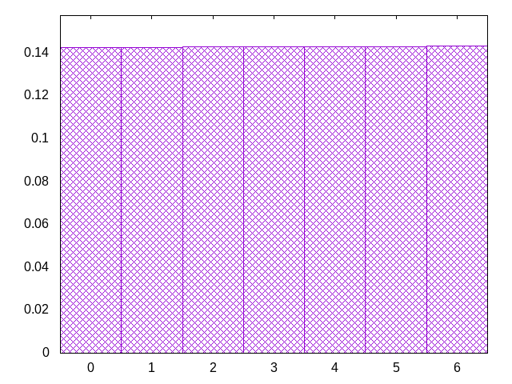
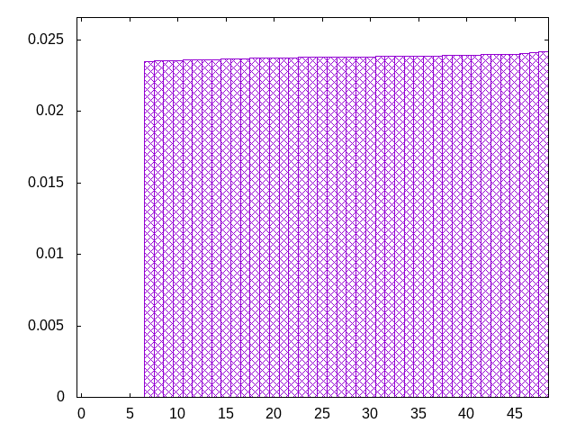
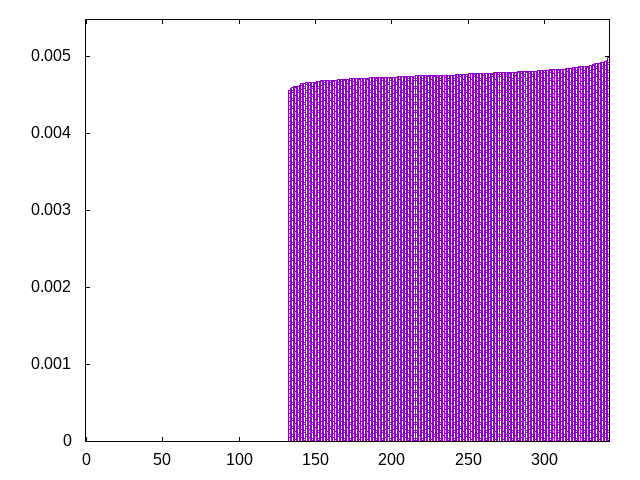
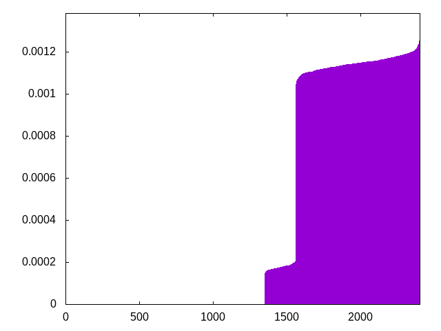

idea came from the way i choose shirts to wear
pieces are chosen from the front of the list, and replaced in blocks to the back of the list.
bagcount: the number of 7-piece bags in the list
grab: the range from which to choose next pieces
wash: how many pieces to remove before replacing them
sotilsjotlzsotjsilotljzioljsziolsjiotsljizlstjzotslizjotsiloztsiljstoilztszjizsotjztsiltjozsjitoszltoisjzlosijztsozloitsjlzotsizjtlsoizjsztlijoliztoljsijzolsjitlozistjolisjoizstljoztijsoltziosztjistolzitzjlsiozsjzlotsjztoilstzoiltsjzlitzjslztoiszjtlostijlzolsjliozlsjiozjtozsiloijsotzisolzjtsizjotisjtziojiszlotijzstlozjtsijotzljtszljtoislztlosiztisjilzjostjiltosizotjsoiljzltozjslziotjolzisjolzjtoszjliojztsjloisjzltoisjzlisotzsilzosjzltosljzsiojtslijzolsjtzisoljtsoijtilostzjlotsjitlzisoztjsojlztistjzoistjzoilstzjilsjtosliztjsliotjsilzosljtizotjlzoisjtloijtsilztoizstljiszojistozlsitjosztlijtsjzlotsljoizsojltislzoisjlzijltosjzitoljzoitlzjsoijtloisltzosiztsjizosljtizostljsiozlstjiozlsiojtlizjstjiltzsojitlzostzijlotlszjtijzsotiojzlisotzljilsoztisjzstojizlsjoizjtslzoislzioztsjlztjsloizsjzlojizojltizotjlisjzotilsjtoliszojilsoztisljtlozistljioszltjioszjlotsizljtsoijostzlozijstlsjzisozljoiztolsjitzsojlzotjzsioltjzlistjzltsjozjtiolztsijltjizjostijzlsoijtolzstoizlsjtziolstzjsoiltjislijotzlijtslzoj
bagginess: 0.1749
bagginess6: 0.8336
distribution1_maxgap: 0.00015399999999998748
distribution2_maxgap: 0.02351102351102351
distribution3_maxgap: 0.004556009112018224
distribution4_maxgap: 0.0008000024000072001
diversity: 6.0
entropy: 9.667
evenness_diff: 5.999
evenness_same: 0.000
maxdrought: 33.7
maxflood: 1
peakdrought: 5.0
repchance: 0.0000
seq4_coverage: 0.4373
seq4_follow: 7.920
distribution1_graph:

distribution2_graph:

distribution3_graph:

distribution4_graph:

similarity: (lower is more similar)
| 0.032 | shirts_smooth |
| 0.593 | ti |
| 0.656 | tgm_tap |
| 0.700 | tgm_tap_pure |
| 0.710 | shift3_5 |
| 0.754 | tgm |
| 0.757 | weight_exp_pure |
| 0.757 | tgm_pure |
| 0.772 | bag_pure |
| 0.779 | bag |
| 0.780 | weight_exp |
| 0.781 | shift1_75 |
| 0.820 | seamless_bag_pure |
| 0.878 | weight |
| 0.880 | balanced5 |
| 1.028 | weight_lin_pure |
| 1.053 | weight2 |
| 1.059 | seamless_deep_pure |
| 1.070 | shirts_smooth2 |
| 1.202 | deepbag_fixed4 |
| 1.210 | wet2 |
| 1.214 | deepbag_window4 |
| 1.258 | wet3_size12 |
| 1.285 | shirts2 |
| 1.304 | shift7 |
| 1.324 | deepbag_fixed7 |
| 1.345 | bag2 |
| 1.472 | deepbag_window7 |
| 1.548 | nes_pure |
| 1.552 | seamless_bag2_pure |
| 1.585 | balanced7 |
| 1.590 | deepbag_fixed10 |
| 1.622 | shift10_5 |
| 1.622 | nes |
| 1.630 | bag3 |
| 1.678 | balanced9 |
| 1.682 | deepbag_window10 |
| 1.691 | shift21 |
| 1.691 | wet_pure |
| 1.702 | shift14 |
| 1.704 | seamless_bag3_pure |
| 1.757 | bag4 |
| 1.844 | wet |
| 1.847 | balanced_long_mul_pure |
| 1.914 | wet2_size100 |
| 1.969 | balanced_long_add_pure |
| 2.051 | wet3 |
| 2.097 | fullrandom |
| 2.172 | fullrandom_pure |
| 4.246 | repeat_recent_pure |
| 5.420 | flatbag |
| 5.420 | flatbag_pure |
| 6.311 | repeat_last_pure |